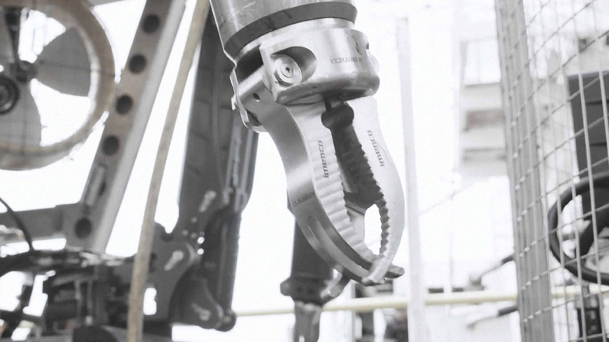

- Operações
- Frota
- Tecnologia
- Pessoas
- Contato
- PT / EN
ROV Work Class · manipulador
A mão que
trabalha a
3.000 metros.
Inspeção e intervenção submarina com 55 ROVs, pilotos formados em casa e ferramentas projetadas pela nossa engenharia.
Ver o sistema inteiro ↓